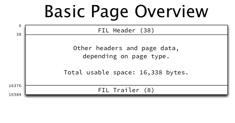
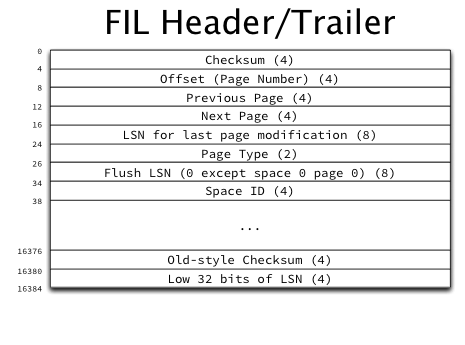
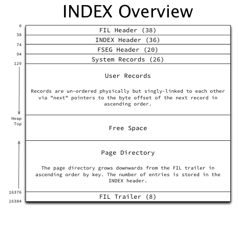
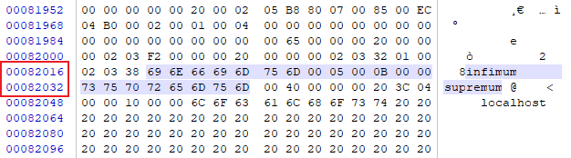
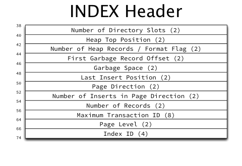
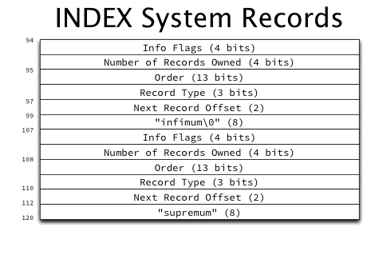
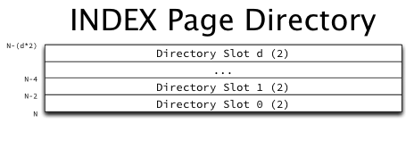

概述：MySQL8 ibd文件详解。MySQL8 的InnoDB以及相关文件
.ibd数据文件的一系列说明文章都可在 jeremy cole 的个人网站上看到，本文仅对其 InnoDB 方面的文章简单翻译和说明。原文链接：InnoDB – Jeremy Cole
相关文章推荐
IBD文件
IBD 文件布局
The basics of InnoDB space file layout – Jeremy Cole
IBD 主要以 spaces (空间也称作 tablespace) 作为 MySQL 存储的上下文，在 InnoDB 中，对于每一个 MySQL表，都增加了表空间文件，也就是 .ibd 文件，也即“file per table”，比如你创建了一个表 test_user，对应的就会创建一个 test_user.ibd 文件，本篇文章以翻译和记录为主描述 .ibd 文件的文件结构。
IBD 文件结构
IBD文件的的主体结构如下所示，分为3部分：

每一个 ibd 文件都有一个38字节的头和8字节的尾。头部包含了一个页面的基础信息，决定了页面其余部分的结构，这一点和PE文件结构基本上一致，文件尾为文件检验和。

文件头和文件尾包含了一下结构（乱序）：
- Page Type: 页面类型，解析页内容的关键，可被分配的类型包括但不限于 文件空间管理、数据字典、回滚日志等
- Space ID: 表空间ID
- Page Number: 一旦页面被初始化，Page Number 就会被存储在表头，可用于检查当前页面与文件中的偏移量是否匹配。该字段存在时表明当前页已经被初始化了。
- Checksum: 一个32位的校验和
- Next Page: 指向下一个 Page 的 32位指针。
- LSN for last page modification：存储在头部的页面最后修改的64尾日志序列号（LSN）,低32位存储在尾部中（Low 32 bits of LSN）。
- Flush LSN：一个64位的LSN字段，存储整个系统中所有页面当中最高的LSN。
页
Pages 是表文件的基本单位，每一个pages的大小为 16kib（也就是 bits）。至于为什么是这个大小，Jeremy 在他的文章中表示可能有以下两个原因：
- 编译时定义
UNIV_PAGE_SIZE被更改 - 使用了 InnoDB 对数据进行了压缩
对于每一个 Page，都为其分配了一个 32bit 的整型数字，称作”变异量”，实际上是每个页面与空间开头的偏移量（对于多文件的表空间，不一定是文件）。基于此可知，page0 位于文件偏移0的位置，page10位于文件偏移16384的位置，以此类推。（引申一下 InnoDB 的数据限额，最大允许 64TiB 的容量，也就是 ）。
每个表空间的第一页都是文件头的page。一个数据文件由很多个页组成，标准的数据页（Index page）组成结构如下所示：

关于页的结构各部分描述如下所示：
- FIL Header: 文件头，所有页面类型通用部分，索引页有别于其他页的地方是其结构中的
privious page和next page指向了同一级的索引。 - INDEX Header: 保存了很多和索引页以及记录管理相关的字段，后文详述。
- FSEG Header: FSEG头包含指向次索引所使用的文件段的指针。未被使用的索引页的 FSEG 是被0填充的。
- System Records: 在每个页中，InnoDB 都有两个行记录，一个是
infinum，一个是supremum。这两个记录在页面中的位置是固定的，可以根据页面的自己偏移量直接找到这两个字段。
- User records: 真正存储用户数据的区域。每条记录都有一个不定长的表头和实际的数据。表头中包含了下一条记录的指针，该指针按升序记录了下一条记录的偏移量，整体构成一个单链表。
- Free Space: 未使用空间
- Page Directory: 页目录从 FIL Header 到 FIL Trailer 记录了每一个页的中一些记录的指针（每个页面的第4到第8条记录）。
INDEX Header
在每一个索引页中，INDEX Header 都有一个固定的长度和如下所示的结构：

INDEX Header 中字段：
- Number of Directory Slots: 当前页面目录在槽中的大小，每一个槽有 16-bit byte 的大小。
- Heap Top POSItion: 当前使用空间结束位置的偏移量。堆顶和页面目录结束之间的空间都是空闲空间。
- Number of Heap Records/Format Flag:
- Format Flag: 当前页的记录格式，存储在
Number of Heap Records的高位（0x8000）中。总共有两个类型。COMPACT和REDUNDANT - Number of Heap Records: 当前页面的记录总量，包括系统记录
infimum和supremum以及删除的记录。
- Format Flag: 当前页的记录格式，存储在
- First Garbage Record Offset: 指向删除记录链表中第一个的入口。
- Garbage Space: 删除记录中已被删除的记录的字节总数。
- Last Insert Position: 最后插入页面记录的字节偏移量。
- Page Direction: 页面生长方向，
LEFT、RIGHT、NO_DIRECTION三个值。决定了页面是顺序插入还是随机插入。每次插入时，都会读取最后插入位置的记录，并将其键与当前插入记录的键进行比较，然后确定插入的方向。 - Number of Inserts in Page Direction: 当
Page Direction被设置后，任何被插入的数据都不能重置方向，但是会递增当前值。 - Number of Records: 当前页面中未被删除的用户记录数量。
- MaxiMum Transaction ID: 当前页面中所有记录中最大的事务ID。
- Page Level: 当前页面在索引中的级别。叶子节点的级别为 0, B+树的级别一次递增。
- Index ID: 当前页面所属ID
关于记录指针（Record pointer）：
记录指针被用在服务的不同地方。INDEX Header 中的最后一次插入位置字段、所有页目录的值、以及系统中下一条记录、用户记录。所有的记录都包含了一个头（可变长），然后后边跟着一个实际的数据（可变长）。Record pointers 指向了记录数据中的第一个字节，实际上是介于头和记录数据之间。这样就可以通过从该位置向后读取头，并从该位置读取记录数据。
由于系统记录和用户记录的Next指针总是指向 Header 中的第一个字段，因此从这个指针向后读取，就可以非常高效的读取一整个页面而不用解析可变长的数据记录。
System records: infimum and supermum
每一个索引页都包含两个系统记录，infimum 和 supermum, 存储在固定的位置（依次 偏移位置 99 和 112）。结构如下所示：

两个系统记录前都有一个典型的记录头，并且 infimum 和 supremum 是这两个系统记录的唯一值。只需要关注系统记录前的记录头即可。
- The infimum record
infimum record 表示比当前页面任何键值都低的值。它的 Next record 指针指向了页面中键值最低的用户记录。infimum 是按序扫描用户数据的一个固定入口点。
- The supremum record
supremum record 表示比当前页面任何键值都高的值。它的 Next record 始终为0（由于页头的问题，记录了一条无效地实际数据），页面中键值最高的用户记录的下一条记录总是指向supremum。
User records
原作：The physical structure of InnoDB index pages – Jeremy Cole
用户表比较复杂，原作者在之后的文章中可能会详细描述。 用户记录会按照插入的顺序添加到页面（并且可以从先前删除的记录中获取现有的可用空间），并且使用每个记录中的 next record 按升序构成一条单链表。一个单链表从最小值开始。并在最大值处结束。使用这个链表可以扫描页面中的所有用户记录。
这就意味着使用这个单链表按照升序从一页扫描到另一个很简单，从而遍历整个索引。大致如下：
- 从索引页的第一页（lowest key）开始(这个页面是通过遍历B+树找到的)。
- 读取
infimum, 然后跟踪它的next record指针。 - 如果记录是
supremum, 则继续执行步骤5，如果不是，继续读取并处理文件 - 跟踪
next record指针，然后继续步骤3 - 如果
next record指针指向 NULL，则退出，如果没有，则继续跟踪next page，然后执行步骤2。
The page directory
页目录开始于文件尾，然后“向下”扩展到用户记录。页目录包含了一个指向 4-8条记录的指针。此外还包含了一个 infimum 和 supremum 的入口地址。

页面目录只是一个动态大小的 16 位偏移指针数组，指向页面内的记录。作者暂时还没有展开细讲。
Free Space
内存位于用户记录（向上增长）和页目录（向下增长）的空间就是闲置空间。一旦用户空间和页目录相遇，也就是闲置空间也被占用，就代表当前页已满。